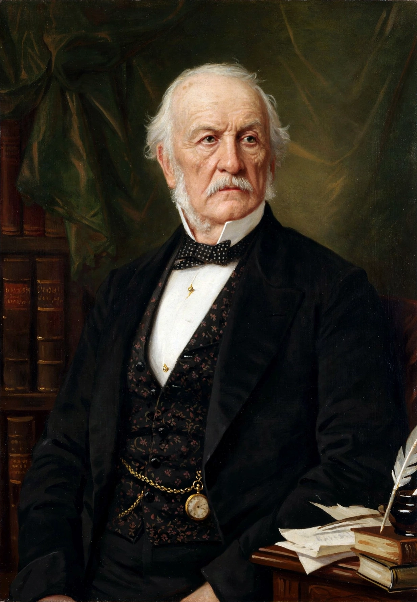

William Ewart Gladstone (29 December 1809 – 19 May 1898) was a British statesman and Liberal politician. In a career lasting over 60 years, he served for 12 years as Prime Minister of the United Kingdom, spread over four non-consecutive terms beginning in 1868 and ending in 1894. He also served as Chancellor of the Exchequer four times, for over 12 years in total.
| William Ewart Gladstone | |
|---|---|
| Born | 29 December 1809 Liverpool, England |
| Died | 19 May 1898 (aged 88) Hawarden Castle, Wales |
| Political party | Liberal |
| Prime Minister | 1868–1874; 1880–1885; 1886; 1892–1894 |
| Spouse | Catherine Glynne |

Gladstone was born in Liverpool, the son of the wealthy merchant and slave-owner John Gladstone. He was educated at Eton College and Christ Church, Oxford, where he excelled in classics and mathematics and served as president of the Oxford Union. He entered Parliament in 1832 as a Tory, initially as a protégé of Robert Peel.
Gladstone's views evolved from high Toryism toward liberalism. As Chancellor of the Exchequer he became famous for eloquent budgets that cut taxes and tariffs and pursued free trade and retrenchment. After the fall of Peel's Conservatives he emerged as leader of the new Liberal Party.
His first ministry (1868–1874) disestablished the Church of Ireland, introduced competitive examinations for the civil service, secret ballots, and elementary education reform. His second ministry (1880–1885) passed the Third Reform Act. His third ministry (1886) foundered on his conversion to Irish Home Rule, splitting the Liberal Party. His fourth and final ministry (1892–1894) again attempted Home Rule before his resignation at the age of 84.
Known as the "People's William" and, in old age, the "Grand Old Man", Gladstone was a formidable orator whose Midlothian campaigns pioneered modern electioneering. His rivalry with Benjamin Disraeli defined Victorian politics. He died at Hawarden Castle in 1898 and was buried in Westminster Abbey.